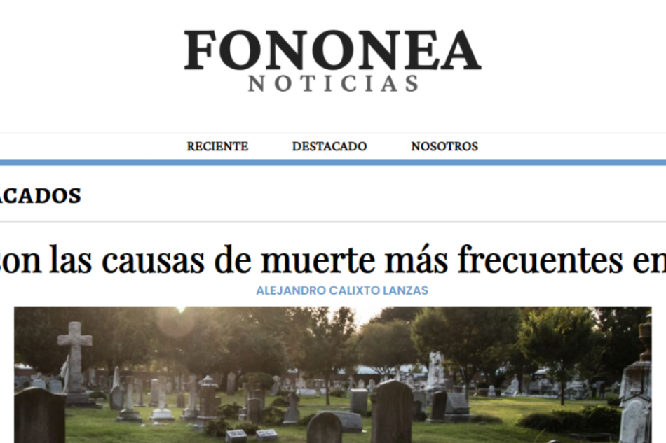
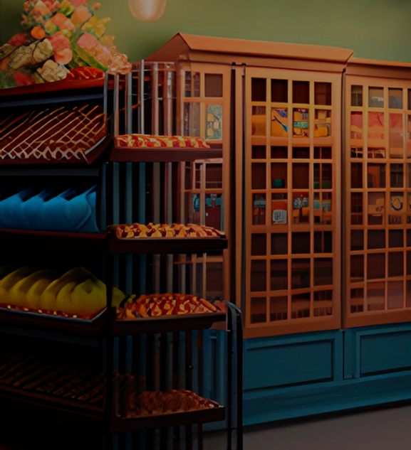

Páginas
Páginas Juegos
Juegos Tecnologías
Tecnologías
Páginas
Páginas de prueba y páginas hechas para otros negocios.
keyboard_arrow_down
NotesJournal es una página web que te permite crear y personalizar tus notas personales, las cuales se guardan en el almacenamiento local del navegador y no en ningún servidor, para mayor privacidad del usuario.
NotesJournal
Una página que simula ser un periódico digital ficticio de prueba llamado "Fononea Noticias". Este periódico digital no está indexado porque no pretende ser una página que compita con los demás periódicos digitales, ya que es una página hecha con el único propósito de formar parte de este portafolio.
Fononea Noticias
Descubre una plataforma experta en creación de páginas web, diseño gráfico, copywriting, SEO digital y community manager. Impulsa tu presencia online con servicios de calidad y alcanza tus objetivos digitales de manera efectiva. Maximiza tu impacto en línea con nuestros especialistas.
DreamCreators
Una página de prueba que simula ser la página web de una tienda de mascotas ficticia, llamada "ElCanino". Esta tienda de mascotas no existe en realidad, ni siquiera está indexado y toda la información que puedes encontrar en esta página es ficticia.